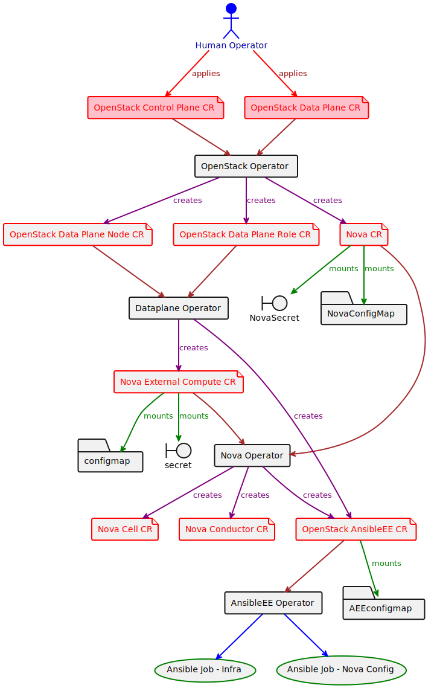

dataplane-operator#
The dataplane-operator automates the deployment of an OpenStack dataplane.
NOTE
The OpenStackDataPlane CRD/controller will eventually be moved to openstack-operator. The move is so that openstack-operator, as the umbrella operator, remains the single managing operator and UX for a complete OpenStack deployment (control plane and data plane).
The dataplane-operator exposes the concepts of data plane role and nodes. These are represented as CRD's within the operator:
The OpenStackDataPlaneRole CRD provides for a logical grouping of nodes of a similar type within a role. Similarities within a role are defined by the user, and could be of a small scope (ansible port), or a large scope (same network config, nova config, provisioning config, etc).
A role also provides for an inheritance model of node attributes. Attributes on the role will automatically be inherited by the nodes on that role. Nodes can also set their own attributes, which will override the inherited values from the role.
The OpenStackDataPlaneRole controller creates and updates a node CR for each node in that role. It also provides synchronization points as its nodes are deployed.
The OpenStackDataPlaneNode CRD and controller encapsulates all the provisioning and deployment logic for a single node. The OpenStackDataPlaneNode controller operates on a single node CR, and manages that node in isolation, performing all the necessary baremetal provisioning and software deployment/configuration on that node.
The OpenStackDataPlane CRD and controller orchestrates deploying roles, and provides synchronization points between role deployment.
Description#
// TODO(user): An in-depth paragraph about your project and overview of use
Getting Started#
You’ll need a Kubernetes cluster to run against. You can use KIND to get a local cluster for testing, or run against a remote cluster.
Note: Your controller will automatically use the current context in your kubeconfig file (i.e. whatever cluster kubectl cluster-info shows).
Running on the cluster#
- Install Instances of Custom Resources:
kubectl apply -f config/samples/
- Build and push your image to the location specified by
IMG:
make docker-build docker-push IMG=<some-registry>/dataplane-operator:tag
- Deploy the controller to the cluster with the image specified by
IMG:
make deploy IMG=<some-registry>/dataplane-operator:tag
Uninstall CRDs#
To delete the CRDs from the cluster:
make uninstall
Undeploy controller#
UnDeploy the controller to the cluster:
make undeploy
Contributing#
// TODO(user): Add detailed information on how you would like others to contribute to this project
How it works#
This project aims to follow the Kubernetes Operator pattern
It uses Controllers which provides a reconcile function responsible for synchronizing resources untile the desired state is reached on the cluster
Test It Out#
- Install the CRDs into the cluster:
make install
- Run your controller (this will run in the foreground, so switch to a new terminal if you want to leave it running):
make run
NOTE: You can also run this in one step by running: make install run
Modifying the API definitions#
If you are editing the API definitions, generate the manifests such as CRs or CRDs using:
make manifests
NOTE: Run make --help for more information on all potential make targets
More information can be found via the Kubebuilder Documentation
License#
Copyright 2023.
Licensed under the Apache License, Version 2.0 (the "License"); you may not use this file except in compliance with the License. You may obtain a copy of the License at
http://www.apache.org/licenses/LICENSE-2.0
Unless required by applicable law or agreed to in writing, software distributed under the License is distributed on an "AS IS" BASIS, WITHOUT WARRANTIES OR CONDITIONS OF ANY KIND, either express or implied. See the License for the specific language governing permissions and limitations under the License.
